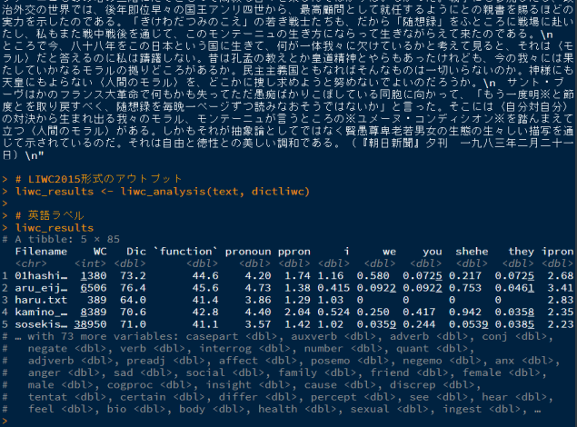

RとJ-LIWC2015によるテキスト解析
五十嵐 祐 (@tasukuigarashi)

はじめに
このページでは、RでJ-LIWC2015(Igarashi, Okuda, & Sasahara, 2022) による日本語テキスト解析を行う方法を紹介しています。
J-LIWC2015は、英単語の言語学的・心理学的特性を数値化したテキスト解析の標準的な辞書である、Linguistic Inquiry and Word Count 2015 (LIWC2015) の公式日本語版です。J-LIWC2015は、11,609の単語、69のカテゴリを含み、心理学者、計算科学者によってその信頼性・妥当性が確認されています。
J-LIWC2015のライセンスは、Pennebaker Conglomerates, Inc.が所有しています。J-LIWC2015は、学術研究目的に限り無料で利用できます。研究成果の公開時には、必ず下記論文を引用してください。
Igarashi, T., Okuda, S., & Sasahara, K. (2022). Development of the Japanese Version of the Linguistic Inquiry and Word Count Dictionary 2015. Frontiers in Psychology, 13:841534. https://doi.org/10.3389/fpsyg.2022.841534
商用利用に関しては、Receptiviまでお問い合わせください。
事前準備
RでJ-LIWC2015による解析を行うには、以下の環境・ファイルが必要です。
- R (UTF-8) （Windows版のRは利用できません。Windowsの場合は、WSLからRを利用してください）
- MeCab/IPADIC
- MeCabのユーザー辞書ファイル（
user_dict.dic） - J-LIWC2015の辞書ファイル（
Japanese_dictionary.dic） （LIWC2015のライセンスが必要です）
R（UTF-8）
J-LIWC2015は、文字エンコーディングがUTF-8の環境で解析を行うことを想定しています。Mac、LinuxのRでは問題ありません。Windows版のRは、文字エンコーディングがCP932 (Shift-JIS) のため、J-LIWC2015による解析が正しく行えません。この問題に対処するには、WSL (Windows Subsystem for Linux)でRを実行します。
WSLのインストール方法は環境によって異なりますが、おおよそ以下の手順でインストールできます。まだWSLをインストールしていない場合は、以下の手順に従ってセットアップを行ってください（コマンドラインあるいはPowerShellでの操作が含まれます）。
WSLとWindows Terminalのインストール（Windowsのみ）
WSLにはWSL1とWSL2があります。ここではWSL2をインストールします。
こちらのサイトを参考に、「WSL2インストール」の手順に従って、WSLのインストールと、Ubuntuのユーザー名とパスワードの設定を行ってください。設定が終わったら、こちらのサイトを参考に、Ubuntuのアップデートを行ってください。
上記のサイトの手順ではWSLがうまくインストールできない場合は、PowerShell（管理者）で以下のコマンドを実行してください。
wsl --install -d Ubuntu次に、Windows Terminalをインストールします。こちらをクリックして、Microsoft Storeからアプリを入手してください。
アプリを開いたら、タブの横の「ｖ」をクリックして設定画面を開き、「規定のプロファイル」を「Ubuntu」に変更し、「保存」してください。その後、「＋」をクリックするとWSLが開きます。
次回以降は、スタートメニューから「Terminal」と検索してWindows Terminalのアプリを開くと、WSLが起動します。
WSL上でのRのインストール（Windowsのみ）
Windows版のRとは別に、WSL上で動作するRをインストールします。
こちらのページを参考に、RをWSLにインストールしてください。
次に、RStudio Serverをインストールします。以下のコマンドをWSLで実行してください。
cd /tmp
wget https://rstudio.org/download/latest/stable/server/bionic/rstudio-server-latest-amd64.deb
sudo apt install -y gdebi
sudo gdebi rstudio-server-latest-amd64.deb追加ライブラリのインストール（WSL、Mac、Linux共通）
Rパッケージのインストールに必要なライブラリをインストールします。以下のコマンドをWSLで実行してください。
sudo apt install -y build-essential libcurl4-gnutls-dev openjdk-7-* \
libxml2-dev libssl-dev zlib1g-dev fonts-noto-cjk \
libatlas3-base libatlas-base-dev gfortranMeCab/IPADIC
日本語では英語と異なり、単語の区切りが明確でないため、MeCab/IPADICを用いて形態素解析（分かち書き）を行います。
MeCab/IPADICのインストール
WSL（Mac/Linuxはターミナル）で、以下のコマンドを実行してください1。
sudo apt install -y mecab libmecab-dev mecab-ipadic-utf8MeCabのユーザー辞書ファイル
形態素解析の結果をJ-LIWC2015で適切に処理するために、追加でユーザー辞書ファイルを使用します。このチュートリアルのRスクリプトを使用する場合、自動でダウンロードされます2。
J-LIWC2015の辞書ファイル
LIWC2015あるいはLIWC-22のライセンス（シリアル番号）が必要です。J-LIWC2015の利用に際して、LIWC2015のライセンスがある場合、新たにLIWC-22のライセンスを購入する必要はありません。このチュートリアルは、LIWC2015形式とLIWC-22形式、両方の辞書フォーマットに対応しています。
LIWC2015形式の辞書は、以下の手順でダウンロードしてください：LIWC2015の辞書サイトにアクセス→LIWC2015のシリアル番号を入力し、Loginをクリック→Dictionariesをクリック→Next>ボタンをクリック→Japanese Dictionaryをクリック→同意事項を読み、I agreeをチェック→Download this Dictionaryをクリック
なお、LIWC2015は販売終了となっており、2022年2月から、Pennebaker Conglomerates, Inc. のサイトで、LIWC-22が購入可能です（30日～3年のサブスクリプション契約のみ）。LIWC-22のシリアル番号は、LIWC2015とは異なります。LIWC-22の辞書サイトからログインし、LIWC-22形式のJ-LIWC2015の辞書ファイルをダウンロードしてください（フォーマットが異なりますが、内容は同一です）。
ダウンロードした辞書ファイルは、辞書専用のフォルダ（このチュートリアルでは、C:\Users\ユーザー名\Documents\J-LIWC2015\dic）を作成し、そこに移動してください。
Rでの解析
事前準備を済ませたら、RでJ-LIWC2015による日本語テキスト解析を行っていきます。以下では、WSLで解析を行う場合について説明します。
RStudio Serverを起動する
WSL（Mac、Linuxはターミナル）を開き、以下のコマンドを実行してください。パスワードの入力が求められます。入力後、何も表示されない場合もあれば、「TTY detected. ～」と表示される場合もあります（問題はありません）。
sudo rstudio-server start次に、ブラウザ（Chrome、Edge、Firefoxなど）で、以下のページにアクセスしてください。
RStudio Serverが起動します。WSLの場合は、Ubuntuのユーザー名とパスワード、Mac、Linuxの場合はシステムのユーザー名とパスワードを入力します。
RStudio Serverにログインできたら、画面左上の「＋」をクリックし、「R Script」を選択します。Rのスクリプトのウィンドウが開きます。以下のスクリプトは、こちらのウィンドウに貼り付けていってください。
パッケージの読み込み
解析に必要なRのパッケージをインストールし、読み込みます。以下のスクリプトをRStudio Serverに貼り付けたら、スクリプトの行を選択し、「Run」をクリックするか、「CTRL」＋「Enter」キーを押します。画面下の「Console」ウィンドウでスクリプトが実行され、結果が出力されます。以降のスクリプトも同様に実行してください。
# RとJ-LIWC2015によるテキスト解析
# パッケージの読み込み
if (!require("pacman")) install.packages("pacman")
pacman::p_load(
dplyr, tidyr, purrr, stringr, stringi, readr, furrr, knitr,
parallel, quanteda
)
pacman::p_install_gh("junhewk/RcppMeCab")
library(RcppMeCab)初めて実行する場合は、必要なパッケージをインストールするため、時間がかかります。 インストールがうまくいかない場合は、事前準備で説明したライブラリをインストールし直すか、Googleで調べてください。
ヘルパー関数の定義
前処理と解析を行うためのヘルパー関数を定義します。
# ヘルパー関数の定義
# CPUのコア数の取得
ncores <- detectCores()
# MeCabのカテゴリー名
MECAB_LOOKUP <- c("記号" = "symbol", "形容詞" = "adj", "助詞" = "particle",
"助動詞" = "auxverb", "接続詞" = "conj", "接頭詞" = "prefix",
"動詞" = "verb", "副詞" = "adverb", "名詞" = "noun",
"連体詞" = "preadj", "その他" = "others", "フィラー" = "filler",
"感動詞" = "interject")
# J-LIWC2015のカテゴリー名（日本語）
LIWC_CAT_JA <- c("機能語", "代名詞", "人称代名詞", "一人称単数", "一人称複数",
"二人称", "三人称単数", "三人称複数", "不定代名詞", "格助詞",
"助動詞", "副詞", "接続詞", "否定詞", "動詞", "疑問詞",
"数詞", "数量詞・助数詞", "形容動詞", "連体詞",
"感情プロセス", "ポジティブ感情", "ネガティブ感情",
"不安", "怒り", "悲しみ", "社会的（相互作用）プロセス",
"家族", "友人", "女性", "男性", "認知プロセス", "洞察",
"原因", "不一致", "あいまいさ", "確かさ", "差別化",
"知覚プロセス", "視覚・知覚", "聴覚",
"感覚（触覚・味覚・嗅覚）", "生物学的プロセス", "身体",
"健康", "性", "摂取", "動因", "つながり", "達成",
"社会的地位・権力", "報酬", "リスク", "相対性", "動作",
"空間", "時間", "仕事・学業", "趣味・余暇", "家", "金銭",
"宗教", "死", "インフォーマル", "罵倒", "ネットスラング",
"うなずき", "間投詞", "フィラー")
# 辞書の読み込みと英語カテゴリーの取得（LIWC2015形式）
read_dict <- function(file) {
dictliwc <- dictionary(file = file, format = "LIWC")
# グローバル変数で英語カテゴリーの取得
LIWC_CAT_EN <<- names(dictliwc)
dictliwc
}
# 辞書の読み込みと英語カテゴリーの取得（LIWC22形式）
read_dict22 <- function(file) {
dic_raw <- read.csv(file)
rownames(dic_raw) <- dic_raw$DicTerm
dicx <- lapply(dic_raw, function(x) rownames(dic_raw)[x == "X"])
dicx$DicTerm <- NULL
dictliwc22 <- dictionary(dicx)
# グローバル変数で英語カテゴリーの取得
LIWC_CAT_EN <<- names(dictliwc22)
dictliwc22
}
# 前処理
preprocess <- function(text) {
characters_replace <- c(
'!' = '！', '"' = '”', '#' = '＃', '$' = '＄', '%' = '％',
'&' = '＆', '\'' = '’', '(' = '（', ')' = '）', '*' = '＊',
'+' = '＋', ',' = '，', '-' = '−', '.' = '．', '/' = '／',
':' = '：', ';' = '；', '<' = '＜', '=' = '＝', '>' = '＞',
'?' = '？', '@' = '＠', '[' = '［', '\\' = '＼', ']' = '］',
'^' = '＾', '_' = '＿', '`' = '｀', '{' = '｛', '|' = '｜',
'}' = '｝', '\\r\\n' = '\\n', '\\r' = '\\n'
)
zenkaku_leftsingle <- '\xe2\x80\x98'
Encoding(zenkaku_leftsingle) <- "UTF-8"
text %>%
str_to_lower() %>%
stri_trans_nfkc() %>%
str_replace_all(coll(characters_replace)) %>%
str_replace_all('[’´｀]', zenkaku_leftsingle)
}
# LIWCの内部処理を模した形態素解析（\bに該当する区切り文字（記号）を削除）
preprocess_liwc <- function(text) {
text %>%
str_remove_all("\\*|:|\\|") %>%
str_split(" ") %>%
unlist() %>%
str_remove_all("^[－、。，．・：；？！゛゜｀＾＿〃／〜｜’”（）〔〕［］｛｝〈〉《》「」『』【】＋＝＜＞￥＄％＃＆＊＠〒〓]$") %>%
stri_remove_empty()
}
# separate vectors into n parts
chunk2 <- function(x, n) split(x, cut(seq_along(x), n, labels = FALSE))
# 形態素解析 (MeCab)
# liwclike: 区切り文字を除外するか（LIWC compatible）
count_mecab <- function(text, liwclike = TRUE, lang = c("en", "ja")) {
# カテゴリーのラベル（デフォルトは英語）
lang <- match.arg(lang)
# MeCabによる形態素解析
n <- nchar(text)
buffer <- 8192*3 # MeCabのバッファサイズ
if (n > buffer) {
# parallel processing
np <- ceiling(n / ncores)
if (str_count(text, "\n") < np) {
text <- str_replace_all(text, "",
pattern = c("？" = "？\n", " " = " \n", "。" = "。\n"))
}
text_split <- str_split(text, "\n")[[1]] %>%
chunk2(., ncores) %>%
map(~ paste(., collapse = " "))
text_df <- text_split %>%
future_map(~ pos(., join = FALSE,
format = "data.frame", user_dic = USERDIC),
.options = furrr_options(seed = NULL)) %>%
bind_rows()
} else {
text_df <- pos(text, join = FALSE,
format = "data.frame", user_dic = USERDIC)
}
# LIWC2015準拠の区切り文字除外
if (liwclike) {
text_df <- text_df %>%
filter(token %in% preprocess_liwc(text_df$token))
}
WC <- nrow(text_df)
wakati <- text_df$token
text_pos <- (table(text_df$pos) / WC * 100)
# 英語の場合、ラベルを変更
if (lang == "en") {
names(text_pos) <- unname(MECAB_LOOKUP[names(text_pos)])
}
list(WC = WC, wakati = wakati, pos = as.data.frame(rbind(text_pos)))
}
# 前処理とLIWCスタイルの解析（input: テキスト, dict: J-LIWC2015辞書）
liwc_analysis <- function(input, dict, lang = c("en", "ja"),
pos_tag = TRUE) {
# カテゴリーのラベル（デフォルトは英語）
lang <- match.arg(lang)
# 前処理
text <- input %>%
map(~ preprocess(.) %>%
count_mecab(., lang = lang))
if (is.null(names(text))) { names(text) <- paste0("text", 1:length(text)) }
WC <- map_int(text, ~ .x[["WC"]])
# 辞書語のカウント
dict_count <- text %>%
map(~ .x[["wakati"]]) %>%
as.tokens() %>%
dfm() %>%
dfm_lookup(dictionary = dict, nomatch = "nomatch")
dict_proportion <- (dict_count / WC) * 100
dfr <- tibble(Filename = names(text), WC = WC) %>%
bind_cols(dict_proportion %>% convert(to = "data.frame")) %>%
mutate(Dic = 100 - nomatch) %>% # % of dictionary words
select(-doc_id, -nomatch) %>%
relocate(Filename, WC, Dic)
# 日本語のラベル
if (lang == "ja") {
dfr <- dfr %>% rename_with(~ all_of(LIWC_CAT_JA), all_of(LIWC_CAT_EN))
}
# MeCabのカテゴリーを付与
if (pos_tag) {
pos <- map_df(text, ~ .x[["pos"]])
names(pos) <- paste0(names(pos), "2") # MeCabのカテゴリーには「2」を付加
dfr <- dfr %>%
bind_cols(pos)
# MeCabのカテゴリーのNAを0に置換
dfr[is.na(dfr)] <- 0
}
dfr
}辞書ファイルの読み込み
このチュートリアルは、以下のようなディレクトリ（フォルダ）構成で進めます。ディレクトリはあらかじめ作成しておいてください。辞書ファイルはいずれか一方のみで問題ありません。
Documents/
└ J-LIWC2015/
├ data/ 解析対象のファイルの場所（作業ディレクトリ）
├ dic/ J-LIWC2015の辞書ファイルの場所
│ ├ Japanese_Dictionary.dic （LIWC2015形式）
│ └ LIWC2015 Dictionary - Japanese.dicx（LIWC-22形式）
└ result/ 結果の出力先ディレクトリディレクトリ構成（/dic/に辞書ファイルが含まれる）
ユーザー名の部分は、自分のディレクトリ構成に合わせて書き換えてください。
dicに辞書ファイルのパスを指定します。LIWC2015形式（拡張子.dic）の場合は、read_dict()で読み込んでください。LIWC-22形式（拡張子.dicx）の場合は、read_dict22()で読み込んでください。いずれもquantedaパッケージを利用しています。
dir_dataに解析対象のファイルが含まれる作業ディレクトリ（data）のパスを指定します（このチュートリアルでは、先に作業ディレクトリのパスを指定し、解析対象のファイルは後ほど青空文庫からダウンロードします）。dir_resultには、結果の出力先ディレクトリ（result）を指定します。
Windowsのエクスプローラー等で表示されるパスは、Rでは直接指定できません。また、WindowsとWSLではファイルの場所の記述法が異なります。\は/で、ドライブレターは/mnt/c/のように記述してください（例：C:\Users\ → /mnt/c/Users/）。
作業ディレクトリ（data）には、解析対象のファイル以外は置かないでください。
# 辞書ファイルの場所（LIWC2015形式）
dic <- "/mnt/c/Users/ユーザー名/Documents/J-LIWC2015/dic/Japanese_Dictionary.dic"
# 辞書ファイルの読み込み（LIWC2015形式）
dictliwc <- read_dict(dic)
# 辞書ファイルの場所（LIWC22形式）
# dic <- "/mnt/c/Users/ユーザー名/Documents/J-LIWC2015/dic/LIWC2015 Dictionary - Japanese.dicx"
# 辞書ファイルの読み込み（LIWC22形式）
# dictliwc <- read_dict22(dic)
# 作業ディレクトリ（解析対象のファイルの場所）の指定
dir_data <- "/mnt/c/Users/ユーザー名/Documents/J-LIWC2015/data"
setwd(dir_data)
# 結果の出力先ディレクトリ
dir_result <- "/mnt/c/Users/ユーザー名/Documents/J-LIWC2015/result"MeCabのユーザー辞書（GitHub）を読み込みます。
# GitHubからMeCabのユーザー辞書読み込み
temp <- tempdir()
user_dic <- 'user_dict.dic'
USERDIC <- file.path(temp, user_dic)
if (!file.exists(USERDIC)) {
download.file("https://github.com/tasukuigarashi/j-liwc2015/raw/main/user_dict.dic",
destfile = USERDIC)
}サンプルデータ読み込み
サンプルデータとして、ldccrパッケージを用いて、青空文庫から作品のテキストのみを作業ディレクトリ（data）にダウンロードします3。
手元のデータを解析する場合は、ここはスキップしてください。
# use the ldccr package and scripts
pacman::p_install_gh("paithiov909/ldccr")
library(ldccr)
# 青空文庫から作品をダウンロード
n <- 5 # 作品の本数
set.seed(1234)
AozoraBunkoSnapshot %>%
sample_n(n) %>%
pull("テキストファイルURL") %>%
map_chr(~ read_aozora(., directory = dir_data))解析対象のファイルの指定
作業ディレクトリ（data）から解析対象のファイルの一覧を取得します。
# 分析対象のファイル一覧
files <- list.files(dir_data, full.names = TRUE)
files## [1] "/mnt/c/Users/ユーザー名/Documents/J-LIWC2015/data/01hashigakini_kaete_zuisoroku.txt"
## [2] "/mnt/c/Users/ユーザー名/Documents/J-LIWC2015/data/aru_eijigoroshi.txt"
## [3] "/mnt/c/Users/ユーザー名/Documents/J-LIWC2015/data/haru.txt"
## [4] "/mnt/c/Users/ユーザー名/Documents/J-LIWC2015/data/kamino_tsurugi.txt"
## [5] "/mnt/c/Users/ユーザー名/Documents/J-LIWC2015/data/sosekishito_watashi.txt"ファイルの読み込み
テキストファイルをリスト形式で読み込みます。リストにはファイル名で名前をつけておきます（解析時に使用されます）。
# ファイルの読み込み
text <- files %>% map(~ read_file(.))
names(text) <- basename(files)
text[1] # テキストの表示## $`01hashigakini_kaete_zuisoroku.txt`
## [1] "モンテーニュ随想録\nESSAIS DE MONTAIGNE\nはしがきに代えて――モンテーニュとの六十年――\n関根秀雄\n 初めてモンテーニュの名を知ったのは大正五年東大仏文研究室におけるエック先生の講義によってであった。聴講者は鈴木信太郎、須川弥作、岸田國士、井汲清治、それに私の五人、当時「仏文はじまって以来の盛況」と言いはやされた。前年は新入生皆無、三年生に山本直文唯一人という時代のことである。私はその名を知っただけでボンヤリしていたが、鈴木君の方は当時刊行中の〈ボルドー市版エセー〉をいつの間にか手に入れ、卒論に「モンテーニュの懐疑思想」を書いてあっぱれ副手となった。\n 私がモンテーニュにのめり込んだのは何年だったかはっきりしないが、勉強のつもりでアルカン版「エセー」を取り寄せ翻訳にかかったのは大正最後の年だったと記憶するから、私とモンテーニュとの付き合いは今や六十年になんなんとする。だがその間に、「仏蘭西文学史」や「仏語動詞時法考」も書いたし、ラ・ブリュイエールの「人さまざま」やブリア・サヴァランの「美味礼賛」の翻訳もしているから、八十の年に公にした「モンテーニュとその時代」のあとがきに「一生モンテーニュ以外には眼もくれなかった一徹な老人」などと自ら定義したのは、いささか言いすぎたと後悔している。\n 事実、昭和十年「モンテーニュ随想録」初版以来、二十七年、三十二年、五十七年と、重版の都度全面的に改修をしたし、ほとんど各章に解説や評注を書き加えもしたし、更に五十一年には「モンテーニュとその時代」、五十五年には「モンテーニュ逍遙」と書き続けずにはいられなかったのであるから、ちょうどそのころ「源氏物語」の仏訳者シフェールさんに会った時も、ついまた私は「モンテーニュのほかはさっぱり不案内で」と言ってしまった。だがそこはさすがにシフェールさん「わたしも源氏以外は何も知りません」と答えてくれた。\n さて「随想録」初版のはしがきに私はこう書いている。「私が此本の翻訳に志したのはもっぱら自身自家のためであった。生れつき病弱で神経のかぼそい私自身のために、また不治の病患を背負っていわば人生の旅路に行きなやんでいる家族の一人のために、幸福と長寿の道を学ぼうとしたのがそもそもの始まりであった」と。そのひとりはわが稿の完成を待たずに昇天してしまったが、残された私の方は思わざる長寿をめぐまれて、ここにこうして、至極幸福に生きている。ひとえにこれモンテーニュのお陰と言うほかはない。\n 今ここに有名な「モンテーニュ全集」の編者アルマンゴー医博がいあわせたら「そうだ、それにちがいない」と太鼓判を押してくれただろう。この人は十歳にしてモンテーニュを知り、一九一三年にモンテーニュ学会を創立し、晩年には日本のトゥーリストたちもおそらくご覧になったと思う、あのソルボンヌ前広場にあるモンテーニュ像をパリ市に寄贈した上、九十二歳の高齢で大往生をとげた不朽のモンテーニュ学者であるが、その専門だった衛生学の学会誌に「中年から随想録の愛読者になった人たちは、そうでない人たちより十年や十五年は長生きをしている」と報告している。\n 顧みると私が「随想録」の翻訳に取りかかったのはまさに満州事変勃発の前夜、三十一歳の時であったが、モンテーニュがエセーを書き始めたのも血腥い宗教戦争の最中、一五七二、三年ごろで、まさにかの聖バルテルミ祭大虐殺の前夜であった。\n 彼はそれよりさき一五六三年三十歳のとき親友ラ・ボエシと死別して以来、原因不明の、何とも名状しがたい不安な毎日――彼自ら※ただ煙り……暗くわびしい夜※と書いている――いわゆる〈実存の不安〉のただ中に暮らしていた。何をする気にもなれず、さりとて何もせずにいればますます居たたまれない気持ちに落ち込んでゆく、そうした気分を、彼は〈無為について〉〈孤独について〉の両章につぶさに述べているが、これはモンテーニュだけのことではなかった。それは古今東西を問わず乱世に生を享けたすべての〈在野の閑人〉、思い高きすべてのインテリたちが、例外なくまともにぶつかった〈実存の不安〉、〈人間の問い〉そのものであった。\n これに答えるために、彼らはどうしても「名利にとらわれて静かなるいとまもなく、蟻の如く集まりて東西にいそぎ南北にはしる」世間の俗物と断然交わりを絶って独りになり、〈自分対自分〉の対話に沈潜しないではいられなかった。かくて兼好も長明も淵明も、「森の生活」の著者ソーローもわがモンテーニュも、皆ひとりになることを求めたのであり、中国の戦国時代も、幾多の隠逸の士とその詩文とを生んだのである。\n だがまちがえてはいけない。それは決して単なる逃避には終わらなかった。それは積極的な一種独特な生活態度、反体制者の生活の一つの型を生んだ。だからモンテーニュもあの塔の三階にたてこもって閑寂な日々を楽しんでばかりはいなかった。戦争にも参加したし、政治外交の世界では、後年即位早々の国王アンリ四世から、最高顧問として就任するようにとの親書を賜るほどの実力を示したのである。「きけわだつみのこえ」の若き戦士たちも、だから「随想録」をふところに戦場に赴いたし、私もまた戦中戦後を通じて、このモンテーニュの生き方にならって生きながらえて来たのである。\n ところで今、八十八年をこの日本という国に生きて、何が一体我々に欠けているかと考えて見ると、それは〈モラル〉だと答えるのに私は躊躇しない。昔は孔孟の教えとか皇道精神とやらもあったけれども、今の我々には果たしていかなるモラルの拠りどころがあるか。民主主義国ともなればそんなものは一切いらないのか。神様にも天皇にもよらない〈人間のモラル〉を、どこかに捜し求めようと努めないでよいのだろうか。\n サント・ブーヴはかのフランス大革命で何もかも失ってただ愚痴ばかりこぼしている同胞に向かって、「もう一度明※と節度とを取り戻すべく、随想録を毎晩一ページずつ読みなおそうではないか」と言った。そこには〈自分対自分〉の対決から生まれ出る我々のモラル、モンテーニュが言うところの※ユメーヌ・コンディシオン※を踏んまえて立つ〈人間のモラル〉がある。しかもそれが抽象論としてではなく賢愚尊卑老若男女の生態の生々しい描写を通じて示されているのだ。それは自由と徳性との美しい調和である。（『朝日新聞』夕刊 一九八三年二月二十一日）\n"J-LIWC2015による解析
quantedaパッケージを利用して、LIWC2015ソフトウェアと（ほぼ）同等の解析を行います。liwc_analysis()に、解析するテキストのリスト、辞書ファイルのオブジェクトを与えると、解析結果が得られます。
WCは総単語数、Dicは辞書語の割合（%）です。function以降の列は各カテゴリに含まれる単語の出現割合（%）です。
末尾に「2」がつくカテゴリ（verb2など）は、MeCabで分類された文法カテゴリです。
# LIWC2015形式のアウトプット
liwc_results <- liwc_analysis(text, dictliwc)
# 英語ラベル
liwc_results| Filename | WC | Dic | function | pronoun | ppron | i | we | you | shehe | they | ipron | casepart | auxverb | adverb | conj | negate | verb | interrog | number | quant | adjverb | preadj | affect | posemo | negemo | anx | anger | sad | social | family | friend | female | male | cogproc | insight | cause | discrep | tentat | certain | differ | percept | see | hear | feel | bio | body | health | sexual | ingest | drives | affiliation | achieve | power | reward | risk | relativ | motion | space | time | work | leisure | home | money | relig | death | informal | swear | netspeak | assent | nonflu | filler | symbol2 | adj2 | particle2 | auxverb2 | conj2 | prefix2 | verb2 | adverb2 | noun2 | preadj2 | others2 | filler2 | interject2 |
|---|---|---|---|---|---|---|---|---|---|---|---|---|---|---|---|---|---|---|---|---|---|---|---|---|---|---|---|---|---|---|---|---|---|---|---|---|---|---|---|---|---|---|---|---|---|---|---|---|---|---|---|---|---|---|---|---|---|---|---|---|---|---|---|---|---|---|---|---|---|---|---|---|---|---|---|---|---|---|---|---|---|---|---|---|
| 01hashigakini_kaete_zuisoroku.txt | 1380 | 73.2 | 44.6 | 4.20 | 1.74 | 1.159 | 0.580 | 0.072 | 0.217 | 0.072 | 2.68 | 31.7 | 4.35 | 3.55 | 4.86 | 2.39 | 5.58 | 0.435 | 4.493 | 0.507 | 0.145 | 0.507 | 2.83 | 1.522 | 1.159 | 0.290 | 0.290 | 0.435 | 3.188 | 0.072 | 0.217 | 0.000 | 0.217 | 5.94 | 1.667 | 1.159 | 0.652 | 0.870 | 1.522 | 0.507 | 1.16 | 0.507 | 0.507 | 0.072 | 1.087 | 0.217 | 0.797 | 0.000 | 0.072 | 3.48 | 0.870 | 0.797 | 1.449 | 0.362 | 0.507 | 11.7 | 0.797 | 1.67 | 9.42 | 1.739 | 0.217 | 0.145 | 0.072 | 0.217 | 0.290 | 0.870 | 0.000 | 0.000 | 0.072 | 0.507 | 0.072 | 0.652 | 0.942 | 30.1 | 9.71 | 0.870 | 0.507 | 11.9 | 2.25 | 41.7 | 1.377 | 0.000 | 0.000 | 0.000 |
| aru_eijigoroshi.txt | 6506 | 76.4 | 45.6 | 4.73 | 1.38 | 0.415 | 0.092 | 0.092 | 0.753 | 0.046 | 3.41 | 29.5 | 6.53 | 3.86 | 6.96 | 2.72 | 6.59 | 0.661 | 1.291 | 0.461 | 0.077 | 0.354 | 2.34 | 0.784 | 1.429 | 0.215 | 0.815 | 0.277 | 5.902 | 1.322 | 0.523 | 0.938 | 1.537 | 4.90 | 1.353 | 0.984 | 0.154 | 1.399 | 0.676 | 1.337 | 1.55 | 0.630 | 0.553 | 0.354 | 1.967 | 0.938 | 0.661 | 0.231 | 0.354 | 3.07 | 0.523 | 0.476 | 1.906 | 0.231 | 0.261 | 13.5 | 1.829 | 3.61 | 8.84 | 1.368 | 0.231 | 0.307 | 0.569 | 0.092 | 0.523 | 3.259 | 0.077 | 0.031 | 0.492 | 1.445 | 0.430 | 0.031 | 1.752 | 32.0 | 12.48 | 1.645 | 0.492 | 15.4 | 2.67 | 31.2 | 1.814 | 0.015 | 0.123 | 0.292 |
| haru.txt | 389 | 64.0 | 41.4 | 3.86 | 1.28 | 1.028 | 0.000 | 0.000 | 0.000 | 0.000 | 2.83 | 29.3 | 4.37 | 2.06 | 7.71 | 1.54 | 6.17 | 0.000 | 0.514 | 0.257 | 0.000 | 0.000 | 1.28 | 0.771 | 0.000 | 0.000 | 0.000 | 0.000 | 0.257 | 0.000 | 0.000 | 0.000 | 0.000 | 2.83 | 0.771 | 0.771 | 0.257 | 0.000 | 0.257 | 0.771 | 5.66 | 2.571 | 2.057 | 0.514 | 0.771 | 0.257 | 0.000 | 0.000 | 0.514 | 1.54 | 0.257 | 0.514 | 0.257 | 0.771 | 0.000 | 13.9 | 2.828 | 3.60 | 8.23 | 0.000 | 0.514 | 0.000 | 0.000 | 0.000 | 0.000 | 0.771 | 0.000 | 0.000 | 0.257 | 0.771 | 0.257 | 0.514 | 3.599 | 34.7 | 8.48 | 0.771 | 0.000 | 16.2 | 2.31 | 32.6 | 0.514 | 0.000 | 0.257 | 0.000 |
| kamino_tsurugi.txt | 8389 | 70.6 | 42.8 | 4.40 | 2.04 | 0.524 | 0.250 | 0.417 | 0.942 | 0.036 | 2.35 | 27.8 | 4.74 | 3.78 | 5.57 | 3.06 | 6.01 | 0.346 | 0.811 | 0.620 | 0.131 | 0.334 | 3.62 | 2.479 | 1.085 | 0.238 | 0.489 | 0.262 | 4.637 | 0.226 | 0.274 | 0.405 | 1.597 | 3.97 | 0.930 | 0.763 | 0.298 | 1.001 | 0.799 | 0.811 | 3.79 | 2.253 | 0.679 | 0.739 | 2.098 | 1.717 | 0.226 | 0.143 | 0.095 | 3.47 | 0.584 | 0.858 | 2.134 | 0.620 | 0.179 | 11.6 | 2.158 | 4.42 | 5.78 | 0.715 | 1.287 | 0.465 | 0.608 | 0.286 | 0.024 | 1.466 | 0.012 | 0.024 | 0.143 | 0.668 | 0.083 | 0.739 | 2.515 | 31.6 | 9.73 | 1.109 | 0.691 | 16.0 | 2.88 | 32.5 | 2.003 | 0.000 | 0.060 | 0.226 |
| sosekishito_watashi.txt | 38950 | 71.0 | 41.1 | 3.57 | 1.42 | 1.024 | 0.036 | 0.244 | 0.054 | 0.039 | 2.23 | 28.1 | 4.92 | 3.89 | 5.39 | 1.97 | 5.73 | 0.372 | 3.474 | 0.683 | 0.116 | 0.264 | 2.44 | 1.479 | 0.873 | 0.072 | 0.390 | 0.146 | 5.163 | 0.211 | 0.357 | 0.259 | 0.277 | 4.13 | 0.978 | 0.834 | 0.467 | 0.842 | 0.665 | 0.685 | 1.61 | 0.893 | 0.403 | 0.234 | 0.953 | 0.549 | 0.198 | 0.008 | 0.218 | 3.58 | 0.755 | 0.955 | 1.854 | 0.306 | 0.252 | 12.7 | 2.082 | 2.96 | 8.66 | 1.561 | 0.783 | 0.254 | 0.354 | 0.064 | 0.118 | 1.772 | 0.036 | 0.010 | 0.121 | 0.947 | 0.187 | 0.385 | 1.422 | 29.5 | 9.98 | 0.742 | 1.309 | 12.9 | 2.40 | 40.0 | 1.258 | 0.000 | 0.039 | 0.041 |
カテゴリーのラベルを日本語で出力する場合は、lang = 'ja'とします。
# 日本語ラベル
liwc_results_ja <- liwc_analysis(text, dictliwc, lang = "ja")
liwc_results_ja| Filename | WC | Dic | 機能語 | 代名詞 | 人称代名詞 | 一人称単数 | 一人称複数 | 二人称 | 三人称単数 | 三人称複数 | 不定代名詞 | 格助詞 | 助動詞 | 副詞 | 接続詞 | 否定詞 | 動詞 | 疑問詞 | 数詞 | 数量詞・助数詞 | 形容動詞 | 連体詞 | 感情プロセス | ポジティブ感情 | ネガティブ感情 | 不安 | 怒り | 悲しみ | 社会的（相互作用）プロセス | 家族 | 友人 | 女性 | 男性 | 認知プロセス | 洞察 | 原因 | 不一致 | あいまいさ | 確かさ | 差別化 | 知覚プロセス | 視覚・知覚 | 聴覚 | 感覚（触覚・味覚・嗅覚） | 生物学的プロセス | 身体 | 健康 | 性 | 摂取 | 動因 | つながり | 達成 | 社会的地位・権力 | 報酬 | リスク | 相対性 | 動作 | 空間 | 時間 | 仕事・学業 | 趣味・余暇 | 家 | 金銭 | 宗教 | 死 | インフォーマル | 罵倒 | ネットスラング | うなずき | 間投詞 | フィラー | 記号2 | 形容詞2 | 助詞2 | 助動詞2 | 接続詞2 | 接頭詞2 | 動詞2 | 副詞2 | 名詞2 | 連体詞2 | その他2 | フィラー2 | 感動詞2 |
|---|---|---|---|---|---|---|---|---|---|---|---|---|---|---|---|---|---|---|---|---|---|---|---|---|---|---|---|---|---|---|---|---|---|---|---|---|---|---|---|---|---|---|---|---|---|---|---|---|---|---|---|---|---|---|---|---|---|---|---|---|---|---|---|---|---|---|---|---|---|---|---|---|---|---|---|---|---|---|---|---|---|---|---|---|
| 01hashigakini_kaete_zuisoroku.txt | 1380 | 73.2 | 44.6 | 4.20 | 1.74 | 1.159 | 0.580 | 0.072 | 0.217 | 0.072 | 2.68 | 31.7 | 4.35 | 3.55 | 4.86 | 2.39 | 5.58 | 0.435 | 4.493 | 0.507 | 0.145 | 0.507 | 2.83 | 1.522 | 1.159 | 0.290 | 0.290 | 0.435 | 3.188 | 0.072 | 0.217 | 0.000 | 0.217 | 5.94 | 1.667 | 1.159 | 0.652 | 0.870 | 1.522 | 0.507 | 1.16 | 0.507 | 0.507 | 0.072 | 1.087 | 0.217 | 0.797 | 0.000 | 0.072 | 3.48 | 0.870 | 0.797 | 1.449 | 0.362 | 0.507 | 11.7 | 0.797 | 1.67 | 9.42 | 1.739 | 0.217 | 0.145 | 0.072 | 0.217 | 0.290 | 0.870 | 0.000 | 0.000 | 0.072 | 0.507 | 0.072 | 0.652 | 0.942 | 30.1 | 9.71 | 0.870 | 0.507 | 11.9 | 2.25 | 41.7 | 1.377 | 0.000 | 0.000 | 0.000 |
| aru_eijigoroshi.txt | 6506 | 76.4 | 45.6 | 4.73 | 1.38 | 0.415 | 0.092 | 0.092 | 0.753 | 0.046 | 3.41 | 29.5 | 6.53 | 3.86 | 6.96 | 2.72 | 6.59 | 0.661 | 1.291 | 0.461 | 0.077 | 0.354 | 2.34 | 0.784 | 1.429 | 0.215 | 0.815 | 0.277 | 5.902 | 1.322 | 0.523 | 0.938 | 1.537 | 4.90 | 1.353 | 0.984 | 0.154 | 1.399 | 0.676 | 1.337 | 1.55 | 0.630 | 0.553 | 0.354 | 1.967 | 0.938 | 0.661 | 0.231 | 0.354 | 3.07 | 0.523 | 0.476 | 1.906 | 0.231 | 0.261 | 13.5 | 1.829 | 3.61 | 8.84 | 1.368 | 0.231 | 0.307 | 0.569 | 0.092 | 0.523 | 3.259 | 0.077 | 0.031 | 0.492 | 1.445 | 0.430 | 0.031 | 1.752 | 32.0 | 12.48 | 1.645 | 0.492 | 15.4 | 2.67 | 31.2 | 1.814 | 0.015 | 0.123 | 0.292 |
| haru.txt | 389 | 64.0 | 41.4 | 3.86 | 1.28 | 1.028 | 0.000 | 0.000 | 0.000 | 0.000 | 2.83 | 29.3 | 4.37 | 2.06 | 7.71 | 1.54 | 6.17 | 0.000 | 0.514 | 0.257 | 0.000 | 0.000 | 1.28 | 0.771 | 0.000 | 0.000 | 0.000 | 0.000 | 0.257 | 0.000 | 0.000 | 0.000 | 0.000 | 2.83 | 0.771 | 0.771 | 0.257 | 0.000 | 0.257 | 0.771 | 5.66 | 2.571 | 2.057 | 0.514 | 0.771 | 0.257 | 0.000 | 0.000 | 0.514 | 1.54 | 0.257 | 0.514 | 0.257 | 0.771 | 0.000 | 13.9 | 2.828 | 3.60 | 8.23 | 0.000 | 0.514 | 0.000 | 0.000 | 0.000 | 0.000 | 0.771 | 0.000 | 0.000 | 0.257 | 0.771 | 0.257 | 0.514 | 3.599 | 34.7 | 8.48 | 0.771 | 0.000 | 16.2 | 2.31 | 32.6 | 0.514 | 0.000 | 0.257 | 0.000 |
| kamino_tsurugi.txt | 8389 | 70.6 | 42.8 | 4.40 | 2.04 | 0.524 | 0.250 | 0.417 | 0.942 | 0.036 | 2.35 | 27.8 | 4.74 | 3.78 | 5.57 | 3.06 | 6.01 | 0.346 | 0.811 | 0.620 | 0.131 | 0.334 | 3.62 | 2.479 | 1.085 | 0.238 | 0.489 | 0.262 | 4.637 | 0.226 | 0.274 | 0.405 | 1.597 | 3.97 | 0.930 | 0.763 | 0.298 | 1.001 | 0.799 | 0.811 | 3.79 | 2.253 | 0.679 | 0.739 | 2.098 | 1.717 | 0.226 | 0.143 | 0.095 | 3.47 | 0.584 | 0.858 | 2.134 | 0.620 | 0.179 | 11.6 | 2.158 | 4.42 | 5.78 | 0.715 | 1.287 | 0.465 | 0.608 | 0.286 | 0.024 | 1.466 | 0.012 | 0.024 | 0.143 | 0.668 | 0.083 | 0.739 | 2.515 | 31.6 | 9.73 | 1.109 | 0.691 | 16.0 | 2.88 | 32.5 | 2.003 | 0.000 | 0.060 | 0.226 |
| sosekishito_watashi.txt | 38950 | 71.0 | 41.1 | 3.57 | 1.42 | 1.024 | 0.036 | 0.244 | 0.054 | 0.039 | 2.23 | 28.1 | 4.92 | 3.89 | 5.39 | 1.97 | 5.73 | 0.372 | 3.474 | 0.683 | 0.116 | 0.264 | 2.44 | 1.479 | 0.873 | 0.072 | 0.390 | 0.146 | 5.163 | 0.211 | 0.357 | 0.259 | 0.277 | 4.13 | 0.978 | 0.834 | 0.467 | 0.842 | 0.665 | 0.685 | 1.61 | 0.893 | 0.403 | 0.234 | 0.953 | 0.549 | 0.198 | 0.008 | 0.218 | 3.58 | 0.755 | 0.955 | 1.854 | 0.306 | 0.252 | 12.7 | 2.082 | 2.96 | 8.66 | 1.561 | 0.783 | 0.254 | 0.354 | 0.064 | 0.118 | 1.772 | 0.036 | 0.010 | 0.121 | 0.947 | 0.187 | 0.385 | 1.422 | 29.5 | 9.98 | 0.742 | 1.309 | 12.9 | 2.40 | 40.0 | 1.258 | 0.000 | 0.039 | 0.041 |
結果の出力先ディレクトリ（dir_result）に結果を保存します。Excelなどで内容を確認することができます。
# Excel対応のCSVで保存
write_excel_csv(liwc_results, file.path(dir_result, "liwc_results.csv"))
write_excel_csv(liwc_results_ja, file.path(dir_result, "liwc_results_ja.csv"))Excelで結果を読み込んで表示
J-LIWC2015、MeCabのカテゴリー一覧
MeCabのカテゴリーは、末尾に「2」がついています。
| Category | カテゴリー | LIWCでの表記 | 単語例 | 単語数 |
|---|---|---|---|---|
| Linguistic dimensions | 言語次元 | |||
| Function words | 機能語 | function | あいつ、非常に、ない | 1808 |
| Pronouns | 代名詞 | pronoun | 私、あなた、ここ | 111 |
| Personal pronouns | 人称代名詞 | ppron | 私、あなた、彼女 | 61 |
| 1st person singular | 一人称単数 | i | 私、僕、おれ | 13 |
| 1st person plural | 一人称複数 | we | 我々、達、たち | 3 |
| 2nd person | 二人称 | you | あなた、君、お前 | 16 |
| 3rd person singular | 三人称単数 | shehe | 彼女、彼、あいつ | 8 |
| 3rd person plural | 三人称複数 | they | 彼女ら、彼ら、奴等 | 8 |
| Impersonal pronouns | 不定代名詞 | ipron | ここ、之、全て | 75 |
| Case particles | 格助詞 | casepart | とか、から、以来 | 187 |
| Auxiliary verbs | 助動詞 | auxverb | だ、できる、如し | 110 |
| Adverbs | 副詞 | adverb | すっかり、非常に、目下 | 1268 |
| Conjunctions | 接続詞 | conj | すなわち、一方、及び | 149 |
| Negations | 否定詞 | negate | ず、ない、未 | 44 |
| Other grammar | その他の文法 | |||
| Verbs | 動詞 | verb | わかる、行く、住む | 2271 |
| Interrogatives | 疑問詞 | interrog | なぜ、どうして、何 | 18 |
| Numbers | 数詞 | number | ゼロ、百、率 | 52 |
| Quantifiers | 数量詞・助数詞 | quant | 数多く、いろんな、バレル | 261 |
| Adjective verbs | 形容動詞 | adjverb | シンプル、大まか、平気 | 184 |
| Prenoun adjectival | 連体詞 | preadj | ほんの、そんな、如何なる | 35 |
| Psychological processes | 心理的プロセス | |||
| Affective processes | 感情プロセス | affect | おかしい、敏感、マジ | 2067 |
| Positive emotions | ポジティブ感情 | posemo | 上品、善、最愛 | 941 |
| Negative emotions | ネガティブ感情 | negemo | 不信、いいかげん、いや | 1075 |
| Anxiety | 不安 | anx | 不吉、ナーバス、警鐘 | 157 |
| Anger | 怒り | anger | 不快、逆ギレ、ハラスメント | 329 |
| Sadness | 悲しみ | sad | 不幸、悲観、自滅 | 168 |
| Social processes | 社会的（相互作用）プロセス | social | 迎える、語る、ふれあい | 1027 |
| Family | 家族 | family | 両親、いとこ、一家 | 122 |
| Friends | 友人 | friend | 友達、盟友、相棒 | 92 |
| Female references | 女性 | female | ウーマン、乙女、ママ | 137 |
| Male references | 男性 | male | おじさん、殿、婿 | 105 |
| Cognitive Processes | 認知プロセス | cogproc | 心がけ、図る、補う | 1307 |
| Insight | 洞察 | insight | 信念、注目、探索 | 384 |
| Causation | 原因 | cause | 誘引、影響、動機 | 229 |
| Discrepancies | 不一致 | discrep | 意外、ふつう、誤 | 107 |
| Tentative | あいまいさ | tentat | 推定、気まぐれ、様々 | 281 |
| Certainty | 確かさ | certain | 常に、厳密、パーフェクト | 247 |
| Differentiation | 差別化 | differ | 識別、相違、対照的 | 137 |
| Perceptual processes | 知覚プロセス | percept | 五感、体験、味 | 970 |
| See | 視覚・知覚 | see | 一見、写す、白 | 351 |
| Hear | 聴覚 | hear | 歌唱、鳴る、静 | 205 |
| Feel | 感覚（触覚・味覚・嗅覚） | feel | 鋭利、感覚、うずうず | 307 |
| Biological processes | 生物学的プロセス | bio | 遺伝、生態、成熟 | 956 |
| Body | 身体 | body | つま先、脳、眠い | 286 |
| Health | 健康 | health | 鎮痛、かゆい、しこり | 384 |
| Sexual | 性 | sexual | ポルノ、欲情、変質者 | 118 |
| Ingestion | 摂取 | ingest | ビール、雑穀、ベジタリアン | 225 |
| Drives | 動因 | drives | 主権、威力、同胞 | 2083 |
| Affiliation | つながり | affiliation | 身内、談笑、友情 | 418 |
| Achievement | 達成 | achieve | 称賛、リーダー、誇る | 546 |
| Power | 社会的地位・権力 | power | ランキング、当局、捕まる | 959 |
| Reward | 報酬 | reward | 発展、向上心、功績 | 237 |
| Risk | リスク | risk | 事故、コスト、セキュリティ | 252 |
| Relativity | 相対性 | relativ | 原点、前後、無限 | 2342 |
| Motion | 動作 | motion | 回す、握る、忍び足 | 844 |
| Space | 空間 | space | 領域、距離、溝 | 760 |
| Time | 時間 | time | やっと、週末、最近 | 814 |
| Personal concerns | 個人的な事柄 | |||
| Work | 仕事・学業 | work | 転職、取り引き、幼稚園 | 837 |
| Leisure | 趣味・余暇 | leisure | 歌う、園芸、小説 | 399 |
| Home | 家 | home | キッチン、枕、リフォーム | 148 |
| Money | 金銭 | money | 給料、負債、ディスカウント | 317 |
| Religion | 宗教 | relig | 密教、神主、供える | 183 |
| Death | 死 | death | 追悼、不滅、四十九日 | 89 |
| Informal language | インフォーマル | informal | 何だ、あいつ、み | 589 |
| Swear words | 罵倒 | swear | 非国民、アホ、雑魚 | 56 |
| Netspeak | ネットスラング | netspeak | うｐ、なう、ぴえん | 346 |
| Assent | うなずき | assent | そう、是非とも、おｋ | 16 |
| Nonfluencies | 間投詞 | nonflu | あぁ、はて、へえ | 121 |
| Filler words | フィラー | filler | うむ、さて、はは | 25 |
| Symbols (MeCab) | 記号2 | symbol2 | ||
| Adjectives (MeCab) | 形容詞2 | adj2 | ||
| Case particles (MeCab) | 助詞2 | particle2 | ||
| Auxiliary verbs (MeCab) | 助動詞2 | auxverb2 | ||
| Conjunctions (MeCab) | 接続詞2 | conj2 | ||
| Prefixes (MeCab) | 接頭詞2 | prefix2 | ||
| Verbs (MeCab) | 動詞2 | verb2 | ||
| Adverbs (MeCab) | 副詞2 | adverb2 | ||
| Nouns (MeCab) | 名詞2 | noun2 | ||
| Prenoun adjectival (MeCab) | 連体詞2 | preadj2 | ||
| Other grammers (MeCab) | その他2 | others2 | ||
| Filler words (MeCab) | フィラー2 | filler2 | ||
| Interjections (MeCab) | 感動詞2 | interject2 |
その他
- CP932 (Shift-JIS)、EUC、UTF-16などのエンコーディングで保存されているテキストファイルは、Rでの読み込み時に文字コードを正しく指定しないと文字化けする場合があります。
License
This software is released under the MIT License, see LICENSE, see LICENSE. This website content is released under the CC BY 4.0 License, see LICENSE.
Copyright (c) 2022 Tasuku Igarashi
J-LIWC2015は、IPADICをベースにした形態素解析に最適化されています。NEologdなど、他の辞書を使用した場合の解析結果は保証できません。↩︎
ユーザー辞書ファイルは、GitHubのJ-LIWC2015サイトにアップロードされています。↩︎
set.seed()の行を削除すると、毎回異なる小説がダウンロードされます。↩︎